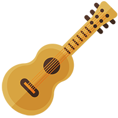

Matematik og Fysik
Hør spejderleder Leon Bak Nielsen fortælle om hvordan han har hjulet Humlebjergskolen i Viborg med at integrere undervisning i et orienteringsløb
Biologi
Biologilærer Birte Hansen har haft stor success med, allerede i de små klasser, at tage på ture med overnatning. Hør hendes vinkel og hvordan hun har inddraget forældrene i opgaven.

Musik
"Vi har lejrbål her..." Mads Frederiksen, lærer i musikskolen har brugt stomp i undervisningen. Hør hvordan naturen er inddraget.